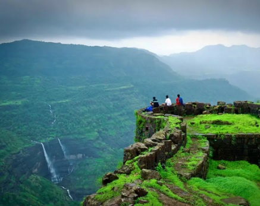

Information about City Pune

Pune is the 9th most populous city in India and one of the largest in the state of Maharashtra
.
Although area around Pune has history going back millennia,
the more recent history of the city is closely
related
to the rise of the Maratha empire from the 17th–18th century.
Pune is a straging city in the western Indian state of Maharashtra. It was once the prime establishment of Peshwas
(prime ministers) of the Maratha Empire in the 18th century. Pune is known by many names and loved for its pleasing
weather.
The city name Pune came from the word Punya, which means merging of the two rivers - Muthi and Mula
Rivers.
There are more names according to the historical records.
It is the 9th most populous city with an
approximate population of 7.4 million as of 2020 in Maharashtra, India.
It has been nominated as “the most
liveable
city of India”.
Pune is widely recognized as the country's second prime IT hub and an apex automobile and
manufacturing hub.
Moreover, Pune is renowned as the Oxford East with an extensive range of educational institutions.
In recent
decades, the city has become the emerging and fastest-growing educational hub with around half of the aggregate
number
of international students studying in Pune.
There were two women named Savitrabai Phule and Fatima Sheikh in
India
who first laid the foundation of a girl's school in Pune.
Various students and professionals from every corner
of
the country are attracted to this city's research institutes of Information Technology, education, management, and
training.
Pune is the 5th largest metropolitan economy and the sixth-highest per capita income in the country.
The main sectors of the local economy are education, manufacturing, and information technology (IT).
Pune
has
been the single biggest hub for German companies for over 60 years
. Serum Institute of India, the world's fifth
major vaccine manufacturer by volume, has a Pune manufacturing plant.
Famous places in or around the city:
- Trikoni Fort
- lohgarh
- Pratapgarh